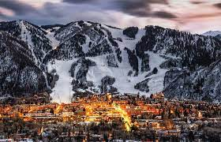
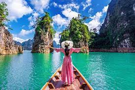
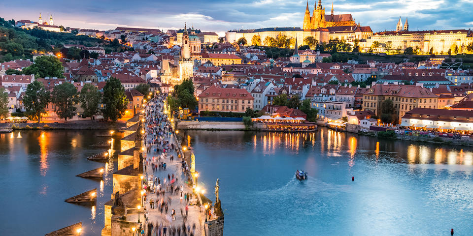
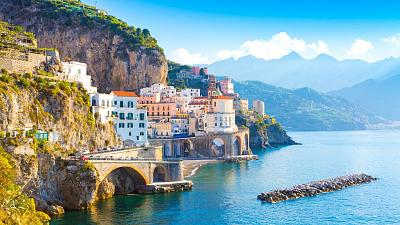

Mi blog
Lugares que me gustaría visitar
Hola, mi nombre es Julieta y bienvenidos a mi primer blog,
aqui les contaré sobre los lugares que más me gustaría visitar en todo el mundo,
el porque de cada uno de los lugares y con que personas visitaría cada lugar.
Me considero una persona que le gustan los viajes y aventuras nuevas, aunque siempre me
llegan a asustar un poco,me emociona demasiado y llena de intriga conocer nuevos lugares,
tener anecdotas, aventuras y recuerdos.
Si me dieran a escoger entre ciudad y la naturaleza, la verdad no podria entre ninguna de las
dos, porque ambas me gustan mucho. Amo precenciar el amanecer en la naturaleza, como el atardecer en la playa
respirar aire fresco por las mañanas y el sonido de la nada, los animales hablando y los pajaros cantando, me encanta sentir
esa paz que te brinda la naturaleza.
Pero, tambien me gusta recorrer las calles en auto admirando los monumentos y edificios , visitar las diversas atracciones
que tienen las ciudades, los restaurantes,los centros comerciales, las diversas culturas y tradiciones de cada lugar.
Chiapas
Chiapas es de los lugares en México que ansio conocer,en especial el cañon del sumidero, que me impacta
y me causa gran asombro por el paisaje de su naturaleza, aunque tambien el centro
de su ciudad, me encantaria conocer sus calles, sus artesanias y cultura.
Oaxaca
Me encanta la playa y la diversidad que hay de ellas en mi pais, Puerto escondido; para mi es una de las
playas más hermosas de México, por sus colores, su vegetación y por su autenticidad.
Al igual que la playa de esta ciudad, me gustaria conocer el corazon de ella, sus calles coloridas,
sus monumentos y estructuras como sus iglesias, su historia como sus tradiciones.

Las maldivas

Las maldivas, un pais rodeado por el oceano, con agua de diferentes tonos azules, con arena blanca,
peces, palmas, con un paisaje al cual admirar. Es una de las playas que más me encantara conocer,
se me hace siemplemente hermosa, con gran tranquilidad y paz.
Lago Louise

Aunque ya he visitados varios lagos, ninguno se compara con lo maravilloso que es este, tan solo
admirar sus colores claros, sus grandes pinos que lo rodean, las montañas de fondo, el clima con el cambio de las
temporadas, en tan solo una foto me hace imaginar lo asombroso que sería estar parada en una lancha en el
centro de este gran lago.
Aspen, Colorado

Soy una personas que jamás ha conocido la nieve, por lo cual cualuqier aventura o cosa nueva por hacer
me emociana demasiado, me encantaria conocer la nieve y que mejor que ser en un lugar bonito, con actividades
y un gran paisaje.
Tailandia

Tailandia es un lugar que tiene una cultura muy distinta a la de México, desde su gatronomia que no se parece
nada a la de nosotros, su raza, su cultura y tradiciones, asi como sus actividades, pero lo que más me gusta de este lugar
es su arquitectura tan hermosa e impresionante, tambien me gusta y me asombran muchos sus islas, con tan hermoso paisaje.
Praga

Lo que más me gusta de esta ciudad es su estructura y arquitetura, me gusta que tienne un estilo muy unico,
como si sus edificios fueran castillos, se parece a las ciudades de Europa pero tiene algo que la distingue entre ellas,
me gustaria visitarla y conocerla, asi como su cultura, a sus personas y sus actividades que tiene para ofrecer.
Paris

Conocer una de las ciudades más famosas del mundo, la ciudad del amor, seria mi gran sueño parisino hecho realidad,
las calles de esta ciudad me fascinan, su comida, la gran moda, su arquitectura y en especial su gran atracción, que es la torre Eiffel.
Barcelona

De esta ciudad me gustan mucho como son de perfectas sus calles y sus cuadras,su gran arquitectura, sus monumentos,
como la sagrada familia, y el acento de las personas que tanto me intriga, asi como su gastronomia.
Italia

Es una ciudad que me gustaria mucho conocer, sus calles, sus canales entre las casas, su arte y gastronimia,
sus casas tan distintas a las que conocemos, su cultura, todo se me hace un lugar perfecto que me encantaria conocer.